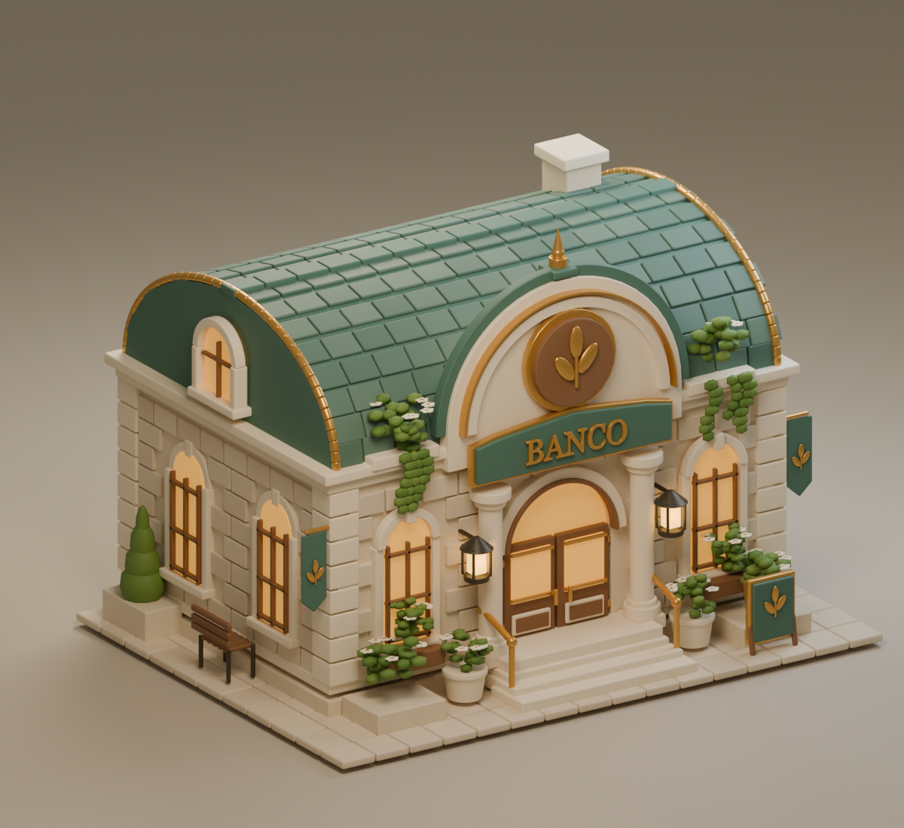

ISLA 001 · UN LUGAR PARA QUEDARSE
Los pequeños
comienzos.
El agua sigue su camino.
Tu ciudad empieza a despertar.
Preparando tu visita…

Arrastra para girar · Rueda para acercarte · Mayús + arrastre para desplazar · En móvil, amplía con dos dedos